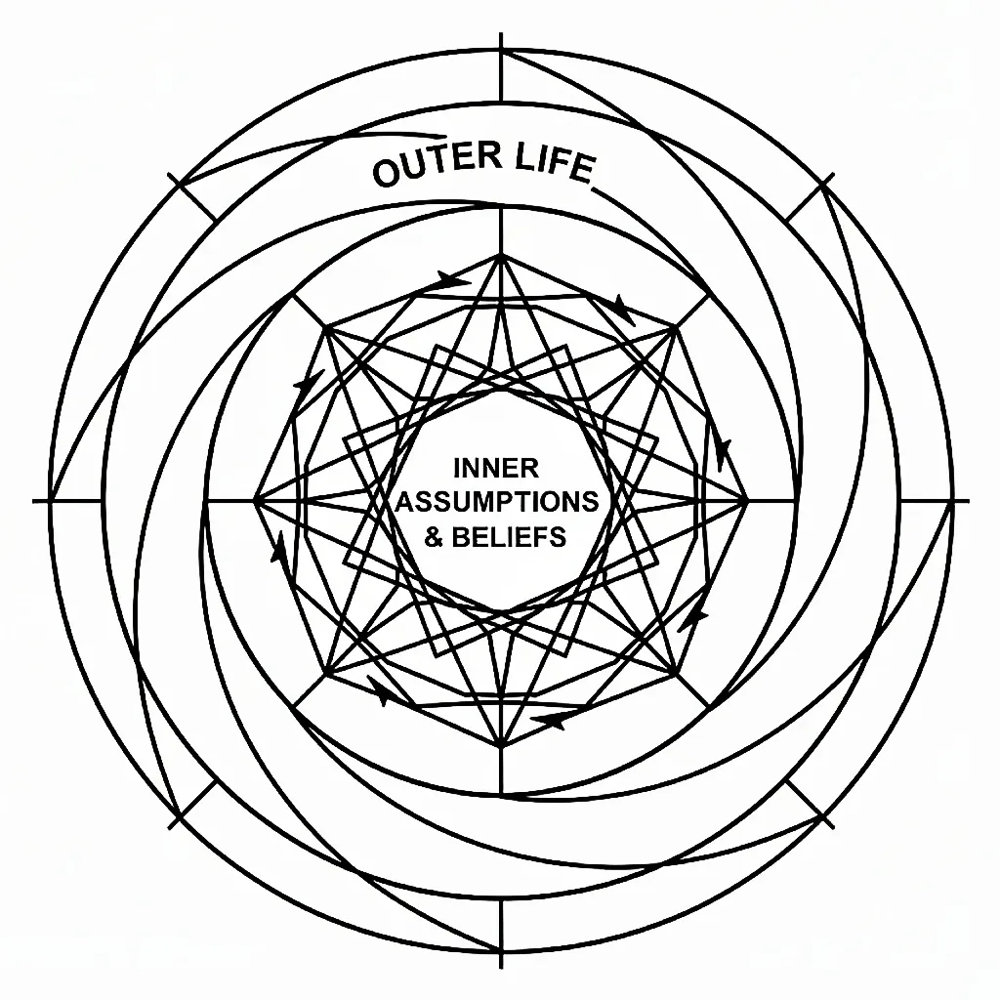

"The image of a wheel turning within a wheel illustrates the courtroom of consciousness: how your outer life moves in alignment with the I AM you assume within.
It embodies the living declaration of 'I AM the Alpha and the Omega' in Revelation 1:8, enforced by the statutes of Elohim."
Introduction
Cherubim appear at the most significant thresholds in Scripture — guarding Eden, flanking the Ark of the Covenant, filling Ezekiel's vision by the river, surrounding the throne in Revelation. At first encounter they seem otherworldly, difficult to place, easier to admire than to understand.
But within the mechanics of consciousness established in Exodus 3:14 — Ehyeh/I AM Asher Ehyeh/I AM — cherubim are not mysterious. They are precise. Every appearance, every detail of their described form, every location they occupy encodes the same operational truth: cherubim are the visible form of Elohim's enforcement function — the Judges and Rulers of I AM made structural, stationed at every threshold where identity is presented, assumed, or refined.
The Governing Mechanics
Exodus 3:14 declares the full operational Name: Elohim of Ehyeh / I AM — the Judges and Rulers of I AM. This reveals the structure within which all of Scripture's symbolism operates.
YHVH/LORD is present consciousness — awareness here and now, whether absorbed in current circumstances or moving toward a desired state.
Ehyeh/I AM is the identity YHVH/LORD chooses to occupy — the active I AM claim made within awareness.
Elohim is the plural internal government of consciousness — the Judges and Rulers that enforce whatever identity is dominantly assumed. Elohim does not choose the identity. Elohim enforces it. Whatever I AM YHVH/LORD presents, Elohim is bound by the statutes of creation to uphold the outcome consistent with that identity.
This is the courtroom of consciousness. YHVH/LORD is the petitioner. Ehyeh/I AM is the verdict. Elohim is the bench that enforces it. Cherubim, across every appearance in Scripture, are Elohim in visible, structural form — the bench made manifest, stationed precisely where identity is being presented, processed, or enforced.
Genesis 3:24 — The Boundary Enforcement
So he sent the man out; and at the east of the garden of Eden he put the cherubim and a flaming sword turning in every direction, to keep the way to the tree of life. — Genesis 3:24
The garden of Eden is the state of unbroken alignment between YHVH/LORD and Ehyeh/I AM — present consciousness fully occupying its identity without fragmentation or contradiction. The tree of life at its centre is the fully sustained I AM — continuous, uninterrupted identity occupation, the innermost state of complete assumption.
What precedes this verse is the foundational jurisdictional error. The man reached for the knowledge of good and evil — an identity of self-determined judgement — while still occupying the garden state. He presented a contradictory I AM to Elohim: two incompatible filings simultaneously. Elohim enforces identity after its kind. A fragmented, self-contradicting consciousness cannot occupy the tree of life state. The enforced consequence is expulsion — not moral punishment but the mechanical result of a false filing.
The cherubim are stationed at the east — the direction of origin and approach, the precise point of potential re-entry. They do not pursue the man into the expelled state. They guard the threshold of return — the boundary between the fragmented I AM and the fully resumed one. This is Elohim's enforcement function in its most foundational form: the statute stands. The tree of life is not accessible to a contradictory I AM. The cherubim mark that boundary not as permanent exile but as the standing enforcement of the statute — present as long as the misaligned filing stands, dissolved when the correct I AM is fully assumed.
The Flaming Sword
It turns in every direction — no fixed orientation, no single angle of approach that bypasses it. This is total jurisdictional enforcement. There is no partial I AM, no fragmented filing, no approach from any angle that satisfies the statute of the tree of life while misalignment remains. The sword responds to every direction because Elohim's enforcement operates across every dimension of the presented identity simultaneously.
The flame adds a further precision. Fire throughout Scripture is the image of refining and consuming — it does not only block, it actively processes what it meets. The flaming sword at the boundary is Elohim's enforcement operating simultaneously as barrier and refiner. The misaligned I AM is not simply stopped. It meets the active statute that would consume the misalignment itself. The boundary of Genesis 3 therefore establishes the primary function of cherubim with complete clarity: they are the enforcement of the statute between the fragmented and the fully assumed I AM, present at every threshold that consciousness must cross to return to the tree of life.
Exodus 25:18–22 — The Judicial Bench
And you are to make two cherubim of gold, of hammered work, at the two ends of the cover... And I will meet with you there, and I will give you orders from above the cover, from between the two cherubims which are on the ark of the law. — Exodus 25:18–22
The Ark of the Covenant is housed in the Most Holy Place — the innermost chamber of the Tabernacle and Temple, the state of full identity assumption, where the complete I AM is occupied and Elohim's enforcement is total. Its contents confirm this. The tablets of the law are the statutes by which Elohim operates. The pot of manna is the sustained provision of the assumed I AM — continuous evidence that the occupied identity produces. Aaron's rod that budded is the botanical proof of identity producing fruit from what appeared dead and finished — Elohim enforcing the assumed I AM regardless of external appearance.
The Ark is therefore the compressed symbol of the complete mechanics: law, sustained provision, and fruitfulness, all contained within the innermost chamber of full assumption.
Two Cherubim Facing Each Other
The two cherubim are hammered gold — the most refined, most enduring form, shaped by sustained pressure into its final expression. They face each other across the mercy seat, wings outstretched and touching above it, eyes looking downward toward the cover between them. The mercy seat is the exact point of presentation — where the I AM is brought before Elohim for enforcement, the verdict seat of the courtroom of consciousness. The two cherubim flanking it are the bench in its most explicit visual form: plural judges in agreement, facing the same point, oriented entirely toward what is presented between them.
Their downward gaze is the posture of active judicial attention. Elohim is not looking outward at circumstances or upward at abstract principle. It is watching precisely what is placed at the seat beneath its wings. They are in agreement — wings touching, facing each other across the seat. This is the internal government operating as unified verdict, not competing voices pulling in different directions but two judges aligned over the same point, enforcing the same statute in complete coherence.
I will meet with you there, and I will give you orders from above the cover, from between the two cherubims. — Exodus 25:22
The communication — the enforced outcome — comes from between them, from the space of their unified judicial agreement, directly above the presented I AM. This is the verdict delivered from the bench, the enforced reality of the identity presented at the mercy seat.
Ezekiel 1:4–28 and 10:20 — The Full Operational Anatomy
And every one had four faces: the first face was the face of a man, the second face was the face of a lion on the right side, and the third face was the face of an ox on the left side, and the fourth face was the face of an eagle. — Ezekiel 1:10
These are the living creatures that I saw under the God of Israel by the river Chebar; and I had knowledge that they were the cherubim. — Ezekiel 10:20
Ezekiel removes all ambiguity. The living creatures of chapter 1 are cherubim. This vision is the most detailed revelation in Scripture of what cherubim are and how they operate in their full form. Every element of the description is precise within the mechanics.
The Four Faces
The four faces are not four separate cherubim. Each cherub carries all four faces simultaneously — every direction covered, with every dimension of the enforcement function present at once. They serve as a unified symbol representing how the principles taught by Abraham, Jacob, Joseph, Judah, and the Gospel identities—Mark, Matthew, Luke, and John—are established and fulfilled.
The Face of a Man. Genesis 1:26 establishes man as identity — the primary creative unit, made in the image and likeness of Elohim. The man-face on the cherubim declares that the enforcement mechanism is oriented toward identity. It sees consciousness as identity-bearing, as capable of the full assumption of I AM. This is Elohim facing the human capacity — the cherubim see YHVH/LORD as the identity it is capable of occupying, not only the state it currently inhabits.
The Face of a Lion. The lion throughout Scripture encodes sovereign authority and the right of rulership. The lion-face on the cherubim declares that Elohim enforces with sovereign authority. Its verdicts are not tendencies or probabilities. They are rulings. Once the I AM is clearly presented, the lion-face of the enforcement is unchallengeable — the statute stands with the full weight of sovereign jurisdiction.
The Face of an Ox. The ox encodes sustained labour and patient, unwearying endurance. The ox-face declares that Elohim's enforcement does not pause halfway through the manifestation of the presented I AM. It sustains the statute through every apparent obstacle, every delay, every circumstance that appears to contradict the assumed identity. The enforcement is continuous, consistent, and inexhaustible.
The Face of an Eagle. The eagle carries the perspective of transcendence — the view from above circumstance, the capacity to see the full arc of what is unfolding.
They that wait upon the LORD shall renew their strength; they shall go up with wings like eagles. — Isaiah 40:31
The eagle-face declares that Elohim operates from the perspective of the completed outcome — it enforces the presented I AM from the vantage point of its finished manifestation, not from within the in-process appearance of current circumstances.
Every cherub carries all four simultaneously. Every direction is covered. The same principle as the turning sword of Genesis 3, now expressed as a four-faced seeing — total directional coverage, total dimensional enforcement.
The Wheels Within Wheels
Now as I saw the living creatures, I saw one wheel on the earth beside the living creatures, for each of the four of them... their rims were full of eyes all around. — Ezekiel 1:15–18
The wheels move with the cherubim without separation. When the cherubim move, the wheels move. When the cherubim stand still, the wheels stand still. The spirit of the living creatures is in the wheels. The wheels are the execution dimension of Elohim's enforcement — the mechanics of the verdict rolling forward into experienced reality. The cherubim are the judicial function; the wheels are the discharge of the judgement into the material dimension. They are not separate. The enforcement and its execution are one continuous movement.
The wheels are full of eyes — awareness, attention, perception filling every part of the structure that moves toward manifestation. The execution is not blind mechanical process. It is fully aware enforcement, seeing every condition of the path, registering every dimension of the journey, moving in the direction of the presented I AM with complete perceptual coverage.
Isaiah 6:1–7 — The Purification Preceding Presentation
Above it stood the seraphim: every one had six wings; with two he covered his face, and with two he covered his feet, and with two he was in flight. — Isaiah 6:2
The seraphim of Isaiah 6 are distinct from cherubim — different name, different form, different function — but they operate within the same mechanics and must be read in relation to the cherubim to understand the complete sequence.
The Six Wings
Wings covering the face. The face is the surface of identity, the visible declaration of I AM. Covering the face is the veiling of the assumed identity — not its absence but its conscious holding inward at the moment of fullest approach. In the presence of the complete I AM, the seraph does not display its own identity outward. It covers it. This is the veil principle at its most concentrated: the assumed identity held internally, not yet released into outward declaration.
Wings covering the feet. Feet in Scripture mark the point of contact between identity and ground, the threshold where the assumed I AM meets the material dimension.
Put off thy shoes from off thy feet, for the place whereon thou standest is holy ground. — Exodus 3:5
Covering the feet is the suspension of premature action — the identity has not yet been released into outward movement. The seraph waits at the precise point between full internal assumption and outward discharge.
Wings for flight. The two wings that move are the active execution function — the capacity to move from the assumed I AM toward its manifestation when the statute releases the verdict. Flight is the movement of the enforced identity into experienced reality. The six wings encode the complete sequence: assume inwardly, suspend premature action, move when the statute releases.
The Declaration and the Coal
And one was crying to another and saying, Holy, holy, holy is the Lord of armies: all the earth is full of his glory. — Isaiah 6:3
The threefold declaration encodes complete jurisdictional coverage — the statute operates at every level, in every dimension, without exception. And its reach is total: all the earth is full of his glory — the enforced I AM does not remain contained in the inner chamber. It fills every dimension of external reality.
Then one of the seraphim came to me with a burning coal in his hand, taken with tongs from the altar: and he put it on my mouth and said, See, this has been placed on your lips, and your sin is taken away, your wrongdoing is forgiven. — Isaiah 6:6–7
The coal comes from the altar — the place of consumed offering, of identity surrendered and transformed by fire. It is applied to the mouth — the seat of declaration, the instrument through which YHVH/LORD presents its assumed I AM to Elohim. The jurisdictional error is removed not by an act of will or a change of behaviour but by the direct application of refining fire to the instrument of declaration itself. The seraph corrects the voice — the mechanism through which the I AM is filed. The instrument of presentation is purified so that what is brought before Elohim's bench arrives without the distortion of the prior misalignment.
Seraphim and Cherubim in Sequence
The seraphim and cherubim operate in sequence within the full mechanics. The seraph purifies the instrument of declaration — refining the voice of the assumed I AM, removing the jurisdictional error from the point of presentation. The cherubim receive the purified I AM at the bench and enforce the verdict. The outcome manifests. Purification of the filing → presentation to the bench → enforcement of the verdict.
Revelation 4:6–11 — The Fully Integrated Form
And before the throne were four living creatures full of eyes before and behind. And the first creature was like a lion, and the second creature like an ox, and the third had a face like a man, and the fourth was like a flying eagle. And the four living creatures had each of them six wings about him; and they are full of eyes within; and they rest not day and night, saying, Holy, holy, holy, Lord God Almighty. — Revelation 4:6–8
The Convergence
These living creatures carry both the four faces of Ezekiel's cherubim — lion, ox, man, eagle — and the six wings of Isaiah's seraphim. This is not a new category of being. It is the fully integrated form — the enforcement function and the purification function united in a single expression at the level of the complete, fully occupied I AM. In Ezekiel the cherubim have four wings. Here they have six. The development encodes increasing completeness: at the level of the throne — the fully realised identity — enforcement and purification are no longer sequential operations. They have become simultaneous. The bench and the refining fire operate as one.
Eyes Before, Behind, and Within
The wheels in Ezekiel were full of eyes. Here the creatures themselves are full of eyes — before, behind, and within. Eyes before: awareness of what is approaching, what is being presented. Eyes behind: awareness of every prior state, every filed identity, every preceding condition. Eyes within: the enforcement mechanism is self-aware — it sees its own operation, its own statutes, its own nature from within. This is the full development of the turning sword of Genesis 3: what began as directional mechanical turning has become omnidirectional awareness — a seeing that leaves no dimension of the presented I AM unregistered.
They Rest Not Day and Night
The enforcement does not pause. Day and night — the complete cycle of experience — the statute stands, the verdict is upheld, the declaration continues without interruption. This is the absolute continuity of Elohim's enforcement: the same principle as the ox-face expressed now as the unceasing operation of the complete integrated mechanism at the level of the fully assumed throne-state of the I AM.
The Sea of Glass
And before the throne there was as a sea of glass, like crystal. — Revelation 4:6
Water throughout Scripture encodes the state of consciousness before identity is assumed — the formless, reflective potential from which YHVH/LORD draws the I AM it will occupy. Genesis 1 begins with the Spirit moving over the waters — Elohim operating on the unformed potential before identity is established. Glass, crystal — perfectly still, perfectly reflective, fixed. The water is no longer turbulent unformed potential. It is completely settled consciousness — YHVH/LORD at rest in its most fundamental state, before even the movement toward assumption. The four living creatures surround this stilled awareness, the complete enforcement mechanism facing the perfectly quiet consciousness that is about to present its I AM.
About The Author | Elohim: God Series | Ezekiel Series | Architecture Series | Wings Symbolism | Solomon Series | Numbers: Four | The Four: Fathers Of The Law